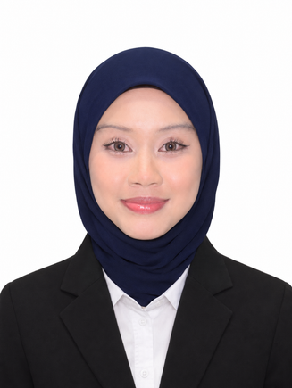

LINGUISTICS & INFORMATION TECHNOLOGY
Nur Mashitah Abu Jabbar
Bachelor of Linguistics and Information Technology (Hons)
A motivated UUM student with an interdisciplinary background in language studies and information technology. Knowledgeable in linguistic analysis, programming, database management, web development and data science.
Available for a four-month internship: 8 March 2027 – 8 July 2027
Contact MeProfessional Summary
Possesses knowledge of linguistic analysis, language and communication, programming, database management, web development and data science. Familiar with Python, Java, PHP, SQL and PostgreSQL, with practical experience in data processing, web scraping and system development through academic projects. Demonstrates strong analytical, problem-solving, communication and teamwork skills.
Education
Bachelor of Linguistics and Information Technology
Universiti Utara Malaysia (UUM), Sintok, Kedah
October 2023 – July 2027 | CGPA: 3.57Relevant coursework: Principles of Data Science, Web Engineering, Software Engineering, Software Testing and Quality Assurance, Expert Systems & Knowledge Engineering, Database Systems and Information Retrieval.
Diploma in Information Technology
Kolej Vokasional Sungai Buloh
2020 – 2022 | CGPA: 3.73Relevant coursework: Java Programming, Software Development and Networking.
Technical Skills
Programming Languages
Python, Java, PHP, SQL
Web Development & CMS
HTML, CSS, JavaScript, WordPress
Database Management
PostgreSQL, Supabase, SQL, ERD
Data Science & Analytics
Data Processing, Data Preprocessing, Word2Vec, Web Scraping
Linguistics & Language Technology
NLP, Corpus Linguistics, Text Analysis, Linguistic Analysis
Tools & Platforms
IntelliJ IDEA, Visual Studio Code, GitHub, XAMPP, Google Colab, Orange, AntConc, LancsBox
Work Experience
Administrative Assistant (Online Business)
Bykalers, The Zizz Damansara Damai | April 2023 – October 2023
- Updated website content and product information.
- Managed stock inventory and product availability.
- Responded to customer enquiries and order-related requests.
- Prepared, packed and organised parcels for shipment.
Diploma Internship in Information Technology
Flowco Malaysia Sdn. Bhd., Sri Damansara | April 2022 – August 2022
- Managed a fingerprint-based attendance system and employee records.
- Performed data entry and updated employee information.
- Conducted basic troubleshooting and supported routine IT operations.
Childcare Teacher
Taska ODC Hazeeq, One Damansara | August 2022 – December 2022
- Supervised children and prepared learning activities.
- Ensured children's safety and well-being and communicated with parents.
Part-time Retail Assistant
7-Eleven, Sphere Damansara | June 2021
- Assisted customers, handled cash transactions and restocked products.
Achievements & Certifications
- Certificate in Logistics and Transport (Aviation Planning and Management) – The Chartered Institute of Logistics and Transport (CILT), 2026.
- Gold Medal, National Innovation Competition, Kolej Vokasional Sungai Buloh (2022).
- 3rd Place, National Environmental Video Competition, Kolej Vokasional Sungai Buloh (2019).
- Malaysian Skills Certificate (SKM) Level 3 in Information Technology, Kolej Vokasional Sungai Buloh (2020).
Languages
Bahasa Melayu – Fluent
English – Fluent
Leadership & Activities
- EXCO, Industry & External Relations, Linguistscape – Linguistics and Information Technology Club, UUM (2025/2026).
- Head of Protocol, Digital Big Data Symposium, Universiti Utara Malaysia (2026).
- Participant & Committee Member, UUM × UNPAD Mobility Program, Indonesia (2025).
- Program Director, SULAM Rhetoric Program, Universiti Utara Malaysia (2025).
- Program Director, Basic Protocol Workshop, Universiti Utara Malaysia (2024).
- Secretary, Pesta Buku Utara Malaysia, Universiti Utara Malaysia (2024).
- Secretary (Protocol), Kelab Rakan Siswa YADIM, Universiti Utara Malaysia (2023–2024).